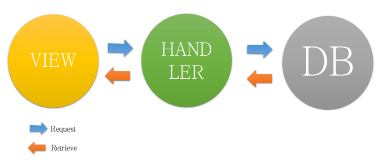

Database Handling
Using Python & Pyside (Qt) As Gui
By : @fian_io
Whats ?
- Make Simple Crud
- Mysql ?
- Plugin For Linux
- Handling Database
- Work In Objet
Todo First ?
- Fill Some Data First
- Open Yur Code Editor
- New Database and Table
- Fill Some Data First
Make ur own main first
Use Tabs view is good idea for onepage CRUD
First Thing #1
Navigate Down - Follow The Step
Create env.py File
Create ur detail environment for your server
connection = {
'host': 'localhost',
'user': 'root',
'password': '',
'database': 'pyDB',
'port': 3306
}
Create The Connection File
That's it, time to listen your own server, connect.py first import the require module
import sys
from env import connection
from PySide.QtSql import *
Class Is Up
That's it, build ur own connection with env detail
class Connection ():
def __init__(self):
self.db = QSqlDatabase.addDatabase("QMYSQL")
self.db.setHostName(connection['host'])
self.db.setDatabaseName(connection['database'])
self.db.setUserName(connection['user'])
self.db.setPassword(connection['password'])
ok = self.db.open()
Easy With File Handler
easy is optional - so create the handler.py
Handler Class Is Up
Todo Some Beautifull Method
Import Module
import sys
from PySide.QtSql import *
from connect import Connection
class dbHandler(object):
"""docstring for dbHandler."""
def __init__(self):
super(dbHandler, self).__init__()
self.db = Connection()
Try Now ! Is nice connection?
Nice Work Dude!
That's it, time to go back up.
Retrieve Data ?
- Populate To Table is the nice one
- do connection and create some method and BOOM!
Create View First
separate to another folder why not? u love simple right?
create the show.py
Show.py
require another module
import sys
from PySide.QtGui import *
from PySide.QtCore import *
from connect import Connection
from handler import dbHandler
dbHandler = dbHandler()
Show.py
set ur ui Unit
def __init__(self, parent=None):
super(Show, self).__init__(parent)
self.initUI()
def initUI(self):
vbox = QVBoxLayout(self)
self.labelUsername = QLabel("Data User (PYDB)")
self.resultsTable = QTableWidget(self)
self.refresh = QPushButton('Refresh', self)
self.refresh.clicked.connect(self.showResult)
vbox.addWidget(self.labelUsername)
vbox.addWidget(self.refresh)
vbox.addWidget(self.resultsTable)
Handler.py
up some method to retrieve data from ur own server
Method Count
def countData(self):
query = QSqlQuery()
query.exec_("SELECT COUNT(*) from user")
if (query.next()):
tot = int(query.value(0));
return tot
Handler.py
Method Get All Data
def getAllData(self):
query = QSqlQuery()
query.exec_("SELECT id, nama, email FROM user")
result = []
while query.next():
idu = query.value(0)
name = query.value(1)
salary = query.value(2)
result.append([idu,name,salary])
return result
Show.py
Connect ur own buttton listener, retrieve your data using handler
def showResult(self):
jmldata = dbHandler.countData()
nrows, ncols = jmldata, 2
self.resultsTable.setRowCount(nrows)
self.resultsTable.setColumnCount(ncols)
Show.py
retrieve all data then populate to table
def showResult(self):
header = ["username","email"]
for index in range(len(header)):
self.resultsTable.setHorizontalHeaderItem(index, QTableWidgetItem(header[index]))
data = dbHandler.getAllData()
for i in range (nrows):
for j in range (ncols):
item = QTableWidgetItem(data[i][j+1])
self.resultsTable.setItem(i, j, item)
... and Its Work Right?
Now, Insert Part
Step in bellow, just take a part, Cheers!
Create View First
separate to another folder why not? u love simple right?
create the insert.py
Insert.py
require another module
import sys
from PySide.QtSql import *
from PySide.QtGui import *
from PySide.QtCore import *
from connect import Connection
from handler import dbHandler
dbHandler = dbHandler()
Insert.py
set ur ui Unit
def __init__(self,parent=None):
super(Create, self).__init__(parent)
self.initUI()
def initUI(self):
formLayout = QFormLayout(self)
self.labelUsername = QLabel("Username")
self.labelEmail = QLabel("Email")
self.txtUsername = QLineEdit()
self.txtEmail = QLineEdit()
self.prosBtn = QPushButton('Proses', self)
formLayout.addRow(self.labelUsername, self.txtUsername)
formLayout.addRow(self.labelEmail, self.txtEmail)
formLayout.addRow("",self.prosBtn)
self.prosBtn.clicked.connect(self.submitForm)
self.setLayout(formLayout)
Handler.py
up some method to create data , send to own server
Method Store
def storeData(self,us,em):
query = QSqlQuery()
query.prepare("INSERT INTO user (nama,email) VALUES (:nama, :email)")
query.bindValue(":nama", us)
query.bindValue(":email1", em)
query.exec_()
Insert.py
Connect ur own buttton listener, send to method, let it handler do their job
def submitFomr(self):
dbHandler.storeData(self.txtUsername.text(),self.txtEmail.text())
take 2 paramater from the textfield. Cheers
In : need more nice view, just cek empty() and block your code with Try catch, do somedialog... and Cek ur own Server?
..... another data add?
Update? Sound Good
Step in bellow, just take a part, Cheers!
Create View First
separate to another folder why not? u love simple right?
create the update.py
Update.py
require another module
import sys
from PySide.QtSql import *
from PySide.QtGui import *
from PySide.QtCore import *
from connect import Connection
from handler import dbHandler
dbHandler = dbHandler()
Update.py
Create ur own main view for update UI
mind : Cek out
Update.py
get id first then populate to your dropdown
Method Populate
def setComboBox(self):
result = dbHandler.getAllData()
for row in result:
self.usersCombo.insertItem (1, str(row[0]))
Handler.py
up some method to update data , send to own server
Method Update
def updateData(self,idk,user,email):
query = QSqlQuery()
query.prepare("UPDATE user SET nama = :nama , email = :email where id=:idu")
query.bindValue(":nama", user)
query.bindValue(":email", email)
query.bindValue(":id", idk)
query.exec_()
Handler.py
Method Get By Id
def getById(self,idk):
query = QSqlQuery()
query.prepare("SELECT nama, email FROM user where id = :id")
query.bindValue(":id", idk)
query.exec_()
result = []
while query.next():
name = query.value(0)
email = query.value(1)
result.append(name)
result.append(email)
return result
Update.py
Connect ur own buttton listener, to change the field data by id
result = dbHandler.getById(self.usersCombo.currentText())
self.txtUsername.setText(result[0])
self.txtEmail.setText(result[1])
take 1 paramater from the combos. Cheers
Update.py
Connect ur own buttton listener, send to method, let it handler do their job
def doUpdate(self):
dbHandler.updateData(self.usersCombo.currentText(),self.txtUsername.text(),self.txtEmail.text())
take 3 paramater from the textfield and combos. Cheers
In : need more nice view, just cek empty() and block your code with Try catch, do somedialog... and Cek ur own Server?
..... another data changed?
Delete is needed
sometimes us need delete another data
Create View First
separate to another folder why not? u love simple right?
create the delete.py
Delete.py
require another module
import sys
from PySide.QtGui import *
from PySide.QtCore import *
from connect import Connection
from handler import dbHandler
dbHandler = dbHandler()
Delete.py
set ur ui Unit
def __init__(self,parent=None):
super(Delete, self).__init__(parent)
self.initUI()
def initUI(self):
formLayout = QFormLayout(self)
self.labelId = QLabel("Pilih ID")
self.usersCombo = QComboBox(self)
self.setComboBox()
self.prosBtn = QPushButton('Delete', self)
self.prosBtn.clicked.connect(self.doDelete)
formLayout.addRow(self.labelId, self.usersCombo)
formLayout.addRow("",self.prosBtn)
Delete.py
get id first then populate to your dropdown
Method Populate
def setComboBox(self):
result = dbHandler.getAllData()
for row in result:
self.usersCombo.insertItem (1, str(row[0]))
Handler.py
up some method to delete data from ur own server
Method Delete
def deleteData(self, idu):
query = QSqlQuery()
query.prepare("DELETE FROM user WHERE id = ?");
query.addBindValue(idu);
query.exec_()
Delete.py
Connect ur own buttton listener, send to method, let it handler do their job
def doDelete(self):
dbHandler.deleteData(self.usersCombo.currentText())
take 1 paramater from the combos. Cheers
In : need more nice view, just cek empty() and block your code with Try catch, do somedialog... and Cek ur own Server?
..... another data has gone?
Its Over Man !!!
THE END
- Best Regard @Fian_io